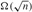
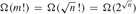
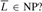
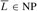
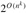

|
|
< Day Day Up > |
|
We now look at algorithms that "verify" membership in languages. For example, suppose that for a given instance 〈G, u, v, k〉 of the decision problem PATH, we are also given a path p from u to v. We can easily check whether the length of p is at most k, and if so, we can view p as a "certificate" that the instance indeed belongs to PATH. For the decision problem PATH, this certificate doesn't seem to buy us much. After all, PATH belongs to P- in fact, PATH can be solved in linear time-and so verifying membership from a given certificate takes as long as solving the problem from scratch. We shall now examine a problem for which we know of no polynomial-time decision algorithm yet, given a certificate, verification is easy.
The problem of finding a hamiltonian cycle in an undirected graph has been studied for over a hundred years. Formally, a hamiltonian cycle of an undirected graph G = (V, E) is a simple cycle that contains each vertex in V . A graph that contains a hamiltonian cycle is said to be hamiltonian; otherwise, it is nonhamiltonian. Bondy and Murty [45] cite a letter by W. R. Hamilton describing a mathematical game on the dodecahedron (Figure 34.2(a)) in which one player sticks five pins in any five consecutive vertices and the other player must complete the path to form a cycle containing all the vertices. The dodecahedron is hamiltonian, and Figure 34.2(a) shows one hamiltonian cycle. Not all graphs are hamiltonian, however. For example, Figure 34.2(b) shows a bipartite graph with an odd number of vertices. Exercise 34.2-2 asks you to show that all such graphs are nonhamiltonian.
We can define the hamiltonian-cycle problem, "Does a graph G have a hamiltonian cycle?" as a formal language:
HAM-CYCLE = {〈G〉 : G is a hamiltonian graph}.
How might an algorithm decide the language HAM-CYCLE? Given a problem instance 〈G〉, one possible decision algorithm lists all permutations of the vertices of G and then checks each permutation to see if it is a hamiltonian path. What is the running time of this algorithm? If we use the "reasonable" encoding of a graph as its adjacency matrix, the number m of vertices in the graph is , where n = |〈G〉| is the length of the encoding of G. There are m! possible permutations of the vertices, and therefore the running time is , which is not O(nk) for any constant k. Thus, this naive algorithm does not run in polynomial time. In fact, the hamiltonian-cycle problem is NP-complete, as we shall prove in Section 34.5.
Consider a slightly easier problem. Suppose that a friend tells you that a given graph G is hamiltonian, and then offers to prove it by giving you the vertices in order along the hamiltonian cycle. It would certainly be easy enough to verify the proof: simply verify that the provided cycle is hamiltonian by checking whether it is a permutation of the vertices of V and whether each of the consecutive edges along the cycle actually exists in the graph. This verification algorithm can certainly be implemented to run in O(n2) time, where n is the length of the encoding of G. Thus, a proof that a hamiltonian cycle exists in a graph can be verified in polynomial time.
We define a verification algorithm as being a two-argument algorithm A, where one argument is an ordinary input string x and the other is a binary string y called a certificate. A two-argument algorithm A verifies an input string x if there exists a certificate y such that A(x, y) = 1. The language verified by a verification algorithm A is
L = {x ∈ {0, 1}* : there exists y ∈ {0, 1}* such that A(x, y) = 1}.
Intuitively, an algorithm A verifies a language L if for any string x ∈ L, there is a certificate y that A can use to prove that x ∈ L. Moreover, for any string x ∉ L, there must be no certificate proving that x ∈ L. For example, in the hamiltonian-cycle problem, the certificate is the list of vertices in the hamiltonian cycle. If a graph is hamiltonian, the hamiltonian cycle itself offers enough information to verify this fact. Conversely, if a graph is not hamiltonian, there is no list of vertices that can fool the verification algorithm into believing that the graph is hamiltonian, since the verification algorithm carefully checks the proposed "cycle" to be sure.
The complexity class NP is the class of languages that can be verified by a polynomial-time algorithm.[6] More precisely, a language L belongs to NP if and only if there exist a two-input polynomial-time algorithm A and constant c such that
L = {x ∈ {0, 1}* : there exists a certificate y with |y| = O(|x|c) such that A(x, y) = 1}.
We say that algorithm A verifies language L in polynomial time.
From our earlier discussion on the hamiltonian-cycle problem, it follows that HAM-CYCLE ∈ NP. (It is always nice to know that an important set is nonempty.) Moreover, if L ∈ P, then L ∈ NP, since if there is a polynomial-time algorithm to decide L, the algorithm can be easily converted to a two-argument verification algorithm that simply ignores any certificate and accepts exactly those input strings it determines to be in L. Thus, P ⊆ NP.
It is unknown whether P = NP, but most researchers believe that P and NP are not the same class. Intuitively, the class P consists of problems that can be solved quickly. The class NP consists of problems for which a solution can be verified quickly. You may have learned from experience that it is often more difficult to solve a problem from scratch than to verify a clearly presented solution, especially when working under time constraints. Theoretical computer scientists generally believe that this analogy extends to the classes P and NP, and thus that NP includes languages that are not in P.
There is more compelling evidence that P ≠ NP-the existence of languages that are "NP-complete." We shall study this class in Section 34.3.
Many other fundamental questions beyond the P ≠ NP question remain unresolved. Despite much work by many researchers, no one even knows if the class NP is closed under complement. That is, does L ∈ NP imply  We can define the complexity class co-NP as the set of languages L such that . The question of whether NP is closed under complement can be rephrased as whether NP = co-NP. Since P is closed under complement (Exercise 34.1-6), it follows that P ⊆ NP ∪ co-NP. Once again, however, it is not known whether P = NP ∪ co-NP or whether there is some language in NP ∪ co-NP -P. Figure 34.3 shows the four possible scenarios.
Thus, our understanding of the precise relationship between P and NP is woefully incomplete. Nevertheless, by exploring the theory of NP-completeness, we shall find that our disadvantage in proving problems to be intractable is, from a practical point of view, not nearly so great as we might suppose.
Consider the language GRAPH-ISOMORPHISM = {〈G1, G2〉 : G1 and G2 are isomorphic graphs}. Prove that GRAPH-ISOMORPHISM ∈ NP by describing a polynomial-time algorithm to verify the language.
Prove that if G is an undirected bipartite graph with an odd number of vertices, then G is nonhamiltonian.
Show that if HAM-CYCLE ∈ P, then the problem of listing the vertices of a hamiltonian cycle, in order, is polynomial-time solvable.
Prove that the class NP of languages is closed under union, intersection, concatenation, and Kleene star. Discuss the closure of NP under complement.
Show that any language in NP can be decided by an algorithm running in time  for some constant k.
A hamiltonian path in a graph is a simple path that visits every vertex exactly once. Show that the language HAM-PATH = {〈G, u, v〉 : there is a hamiltonian path from u to v in graph G} belongs to NP.
Show that the hamiltonian-path problem can be solved in polynomial time on directed acyclic graphs. Give an efficient algorithm for the problem.
Let φ be a boolean formula constructed from the boolean input variables x1, x2, ..., xk, negations (¬), AND's (∧), OR's (∨), and parentheses. The formula φ is a tautology if it evaluates to 1 for every assignment of 1 and 0 to the input variables.Define TAUTOLOGY as the language of boolean formulas that are tautologies. Show that TAUTOLOGY ∈ co-NP.
Let G be a connected, undirected graph with at least 3 vertices, and let G3 be the graph obtained by connecting all pairs of vertices that are connected by a path in G of length at most 3. Prove that G3 is hamiltonian. (Hint: Construct a spanning tree for G, and use an inductive argument.)
[6]The name "NP" stands for "nondeterministic polynomial time." The class NP was originally studied in the context of nondeterminism, but this book uses the somewhat simpler yet equivalent notion of verification. Hopcroft and Ullman [156] give a good presentation of NP-completeness in terms of nondeterministic models of computation.
|
|
< Day Day Up > |
|